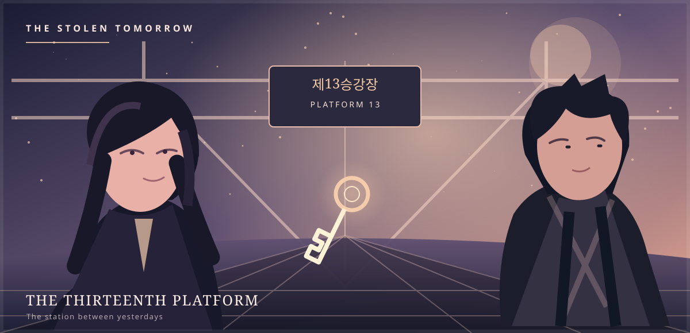

PROLOGUE / 00SEOUL · ONE MINUTE BEFORE MIDNIGHT
ORIGINAL FICTION & ILLUSTRATION · MANHUA MULTIVERSE
THE SCENEYOUR FIRST CHOICE
The thirteenth platform
YOUR MOVE
02 PATHSWhat happens next?
You reached an ending. The story can still change.